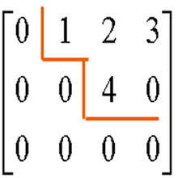

高斯消元
引入
高斯消元听起来非常高大上，其实就是我们初中学的加减消元、代入消元法的程序化实现罢了。
考虑一个方程组
$$
\begin{cases}
A_{1,1} x_1+A_{1,2} x_2+A_{1,3} x_3+…+A_{1,n} x_n=C_1 \\\\
A_{2,1} x_1+A_{2,2} x_2+A_{2,3} x_3+…+A_{2,n} x_n=C_2 \\\\
…\\\\
A_{k,1} x_1+A_{k,2} x_2+A_{k,3} x_3+…+A_{k,n} x_n=C_n \\\\
\end{cases}
$$
我们要求出它的一组解，或者判定无解或无穷多组解。这就是高斯消元的基础应用。
概念
系数矩阵：上面的方程组中系数A组成的$n\times n$矩阵就是它的系数矩阵。
增广矩阵：系数矩阵的最右边补上一列，表示$C_1,C_2,…,C_n$，得到的$n\times (n+1)$矩阵就成为增广矩阵。
初等行列变换：
- 以一个非零的数乘矩阵的某一行（列）
- 把矩阵的某一行（列）的c倍加到另一行（列），这里c是任意数
- 互换矩阵中两行（列）的位置
阶梯型矩阵：一个矩阵成为阶梯型矩阵，需满足两个条件：
- 如果它既有零行，又有非零行，则零行在下，非零行在上。
- 如果它有非零行，则每个非零行的第一个非零元素所在列号自上而下严格单调上升。
转置：把一个矩阵的行变成列，列变成行，得到的矩阵就是原矩阵的转置。记为$A^T$
如图所示，这就是一个阶梯型矩阵

三角矩阵：三角矩阵分上三角矩阵和下三角矩阵两种。上三角矩阵的对角线左下方的系数全部为零，下三角矩阵的对角线右上方的系数全部为零。
算法流程
它的基本思想是通过初等行变换，把增广矩阵消成上三角矩阵，此时最后一个非零行必然是$ax=b$的形式。所以我们已经得到了一个未知数的值。把这个值代回上面的所有方程中，则它的上面一行也变成了$ax=b$的形式…重复下去，我们就可以得到所有未知数的值了。^_^
代码 （SDOI2006 线性方程组）
改编自 ComeIntoPower，在此对他表示谢意QwQ1
2
3
4
5
6
7
8
9
10
11
12
13
14
15
16
17
18
19
20
21
22
23
24
25
26
27
28
29
30
31
32
33
34
35
36
37
38
39
40
41
42
43
44
45
46
47
48
49
50
51
52
53
54
55
56
57
using std::fabs;
using std::swap;
const int maxn=1e3+10;
const double eps=1e-9;
inline int Gauss_Elimination(double (*A)[maxn],double* f,int n)
{
for (int i=1,c=1,j;i<=n;++i)
{
for (j=c;j<=n && fabs(A[j][i])<eps;++j);
if (j==n+1) continue;
for (int k=1;k<=n+1;++k) swap(A[c][k],A[j][k]);
for (int j=c+1;j<=n;++j)
if (fabs(A[j][i])>eps)
{
double t=A[j][i]/A[c][i];
for (int k=i;k<=n+1;++k)
A[j][k]-=t*A[c][k];
}
++c;
}
bool NoAnswer=false,InfAnswer=false;
for (int i=n;i;--i)
{
bool NoVariables=true;
for (int j=i;j<=n;++j)
if (fabs(A[i][j])>eps) NoVariables=false;
if (NoVariables)
if (fabs(A[i][n+1])>eps) NoAnswer=true;// 0=C,C!=0,无解
else InfAnswer=true;// 0=0,无穷多组解
else
{
for (int j=i+1;j<=n;++j) A[i][n+1]-=A[i][j]*f[j];
f[i]=A[i][n+1]/A[i][i];
}
}
if (NoAnswer) return -1;
return !InfAnswer; //无穷多解返回0，有唯一解返回1
}
int main()
{
static double A[maxn][maxn],f[maxn];
int n;
scanf("%d",&n);
for (int i=1;i<=n;++i)
for (int j=1;j<=n+1;++j)
scanf("%lf",&A[i][j]);
int result=Gauss_Elimination(A,f,n);
if (result^1) return printf("%d\n",result)&0;
for (int i=1;i<=n;++i) printf("x%d=%.2lf\n",i,f[i]);
}
解释：
- Q: 咋判断无解和无穷多组解鸭？
- A:当消元完成后，回代之前时，方程组若出现除了常数项之外全零的行，则一定无解或无穷多组解。（常数项为0是无穷多组解，非零则无解）
- Q：代码中那个变量c的作用是啥呀？为啥不能用i代替呢？
- A：因为如果把c换成i，当存在一个自由元的时候，可能没法消出来全零行，而是直接跳过了本该消成全零行的那一行，将其放在了原来的位置，导致判断无穷解和无解的时候出偏差。（详见洛谷本题讨论的“Hack+1”篇目).
行列式
概念：
主子式：对于一个n阶矩阵A，选取它的任意i行，将行号记为$T[1..i]$，并同时选取第$T[1..n]$列，得到的新矩阵即为原矩阵的一个i阶主子式。
新矩阵的行列式也可称为$|A|$的一个i阶主子式。
行列式：行列式是一个标量。对一个矩阵A来说，它的行列式（记作$|A|$)的定义是
$$|A|=\sum_P(-1)^{\delta(P)}\prod_{k=1}^n A_{i,P_k} $$
其中，$P$取遍$1..n$的所有排列，$\delta(P)$为P的逆序对数。这个柿子很好理解：就是从每行每列各选一个数，一共n个数，
行列式有以下性质：
- $|A|=|A^T|$ (由定义，比较显然，在此不证)
将一个矩阵的两行互换，行列式变号。
为了证明这个定理，我们需要首先证明一个引理：- 引理：一个排列的两项交换，逆序对改变量为奇数。
- 引理证明：不妨设$a<b$.这样的交换对位置在a前面和在b后面的数没有影响，所以只需要考虑$a,b$之间的这个子区间。设交换的两项为$a,b.$把位置在$a.b$之间的数分类：设属于$(-\infty ,a)$的数量为$x$,属于$(a,b)$的数量为$y$,属于$(b,+\infty )$的数量为$z$。区间里交换以前的逆序对数为$x+z$,交换后为$(x+y)+(y+z)+1$，差值为$2y+1$,是奇数。
现在，证明这个定理就十分容易了。
- 证明：交换矩阵的两行，相当于交换$P$的两项。逆序对改变量为奇数，所以行列式变号。
- 引理：一个排列的两项交换，逆序对改变量为奇数。
- 推论2.1：有两行相同的矩阵，行列式为$0$。
- 证明：交换这两行，行列式变号且值不变…
- 将某一行乘上$k$，行列式乘上$k$.
- 证明：你在这一行选出的每个数，都乘上了一个$k$。提取公因数即得。
- 两个矩阵如果只有一行不同，则它们的行列式和等于将不同的行相加得到的新矩阵的行列式。
- 证明：从定义下手。挺显然的吧qwq.
- 推论4.1：将一行乘上$k$的值加到另一行上，行列式不变。
- 证明：设被加的行为$x$，乘上$k$加到$A$上的为$y$。把这个新矩阵拆成两个矩阵$A,B$。其中$A$是原矩阵，$B$的$x$行改为$y*k$：则由性质2和3，$B$的行列式为$0$。又由性质4，新矩阵的行列式为$|A|+|B|$,和原来相等
- 有了这个推论和性质2，我们就可以做高斯消元啦！
每行每列和均为0的矩阵，行列式为0.
- 证明：对原矩阵补上一列0，进行高斯消元。显然这个方程组有解——所有未知数都相等.则由高斯消元判断无穷多组解的条件珂得，消出的上三角矩阵中，一定有全零行，且常数项也是0。所以该矩阵的行列式为0.因为高消之后的矩阵的行列式只是原行列式乘上±1（只在交换行的时候行列式发生变号），所以原矩阵的行列式也为0.
对于一个上三角矩阵，它的行列式为对角线上数的乘积。
- 证明：要在每行选取一个列不重复的数，且这些数乘积非0，则只能选对角线上的n个数。
求解
直接求解要枚举全排列，时间复杂度为$O(n!*n)$。不可接受。使用高斯消元将其化为上三角矩阵，珂在$O(n^3)$的时间内求n阶矩阵的行列式。1
2
3
4
5
6
7
8
9
10
11
12
13
14
15
16
17
18
19
20
21
22
23inline long double determinant(long double (*A)[maxn],int n)
{
int s=1;
for (int i=1,c=1,j;i<=n;++i)
{
for (j=c;j<=n && fabs(A[j][i])<eps;++j);
if (j==n+1) continue;
s=-s;
for (int k=1;k<=n;++k) swap(A[c][k],A[j][k]);
for (int j=c+1;j<=n;++j)
if (fabs(A[j][i])>eps)
{
long double t=A[j][i]/A[c][i];
for (int k=i;k<=n;++k)
A[j][k]-=A[c][k]*t;
}
++c;
}
long double ans=s;
for (int i=1;i<=n;++i)
ans*=A[i][i];
return ans; // 这里要取绝对值
}
矩阵树定理
概念：
- 度数矩阵：定义$D$为图$G=(V,E),(|V|=n,|E|=m)$的度数矩阵，则$D$为一个$n\times n$矩阵，其中$D_{i,i}$为编号为i的结点的度数.
- 邻接矩阵：就是我们通常所说的邻接矩阵,记为$G$。
- 基尔霍夫矩阵（拉普拉斯矩阵）：定义基尔霍夫矩阵$K=D-G$.
定理：
当邻接矩阵不带边权时（若$u,v$有边，则$G(u,v)=G(v,u)=1$)，则有
矩阵树定理：一个无重边、自环的图$G$的生成树个数，等于它的基尔霍夫矩阵任意一个n-1阶主子式的行列式的绝对值。
将邻接矩阵加上边权，得到新的邻接矩阵、度数矩阵和基尔霍夫矩阵。即：允许重边（甚至把边数扩展到$\mathbb R$)
此时：
$$D(i,i)=\sum_{(i,j)\in E} w((i,j))$$
$$G(i,j)=w(i,j)$$
$$K=D-G$$
推广一下，有：
变元矩阵树定理：
- 对生成树T定义求其边权之积的函数$F(T)=\prod_{e\in T}w(e)$
- 对于每一棵生成树，求其$F$函数值的和得到$H(G)$:$H(G)=\sum_{T is a spanning tree of G}F(T)$
- 则$H(G)$等于（带边权的）基尔霍夫矩阵的任意一个n-1阶主子式的行列式的绝对值.
- 容易发现，当边权都为1的时候，它就是普通的矩阵树定理.
对于有向图来说，有：
有向图的矩阵树定理
定义
$$K_{i,j}=−w(i,j)$$
$$K_{i,i}=∑_{j=1}^n w(i,j)$$
去掉第i行第i列，则能求出以i为根的外向树的数量（边权积）
同样地，定义
$$K_{i,j}=−w(i,j)$$
$$K_{i,i}=∑_{j=1}^n w(j,i)$$
则能求内向树的数量（边权积）
(原谅我语文学得不好没法简洁地描述上述定理qwq…)
证明：
我们采用闭眼证明法…嗯！它是对的！^_^..事实上博主太菜并不会证明..(留坑)
应用：
BZOJ1002： （假的）题解戳这里~
BZOJ1016：题解戳这里~
BZOJ3524：题解戳这里~
引用&鸣谢
对以上巨佬表示感谢。